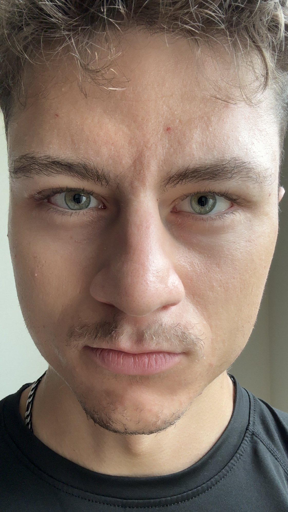
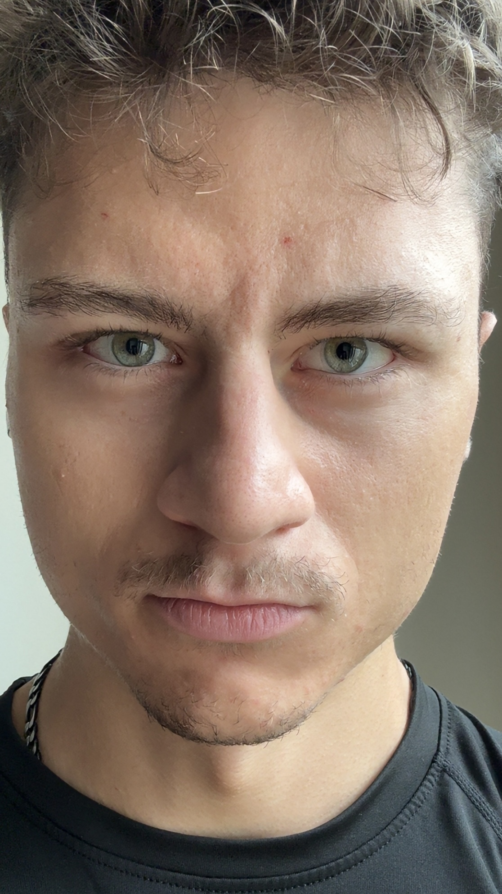
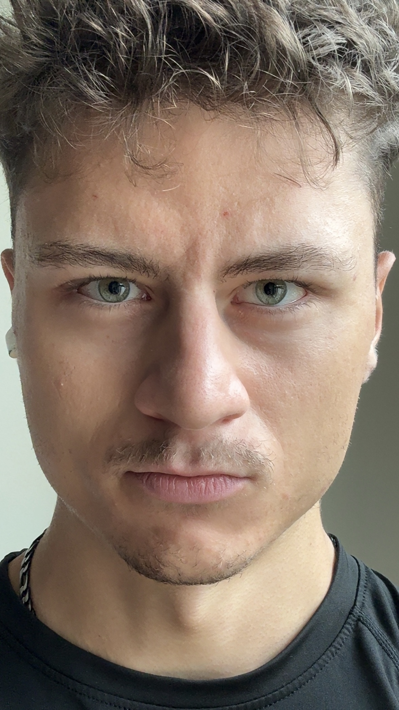
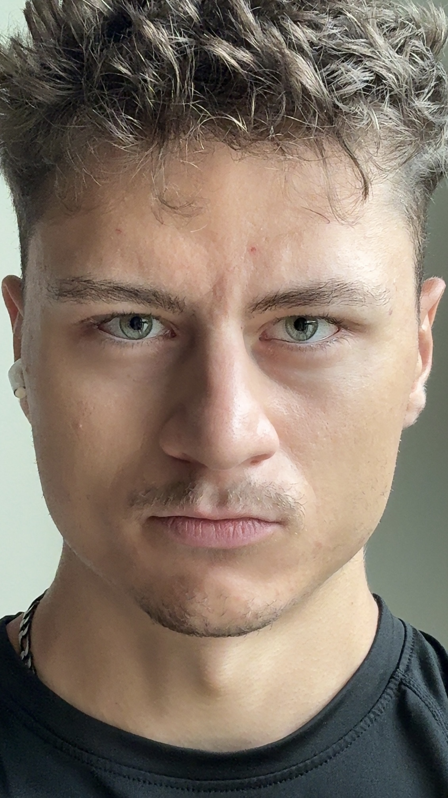
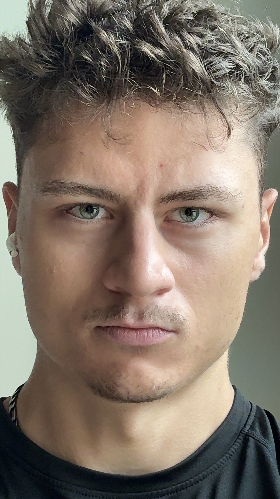
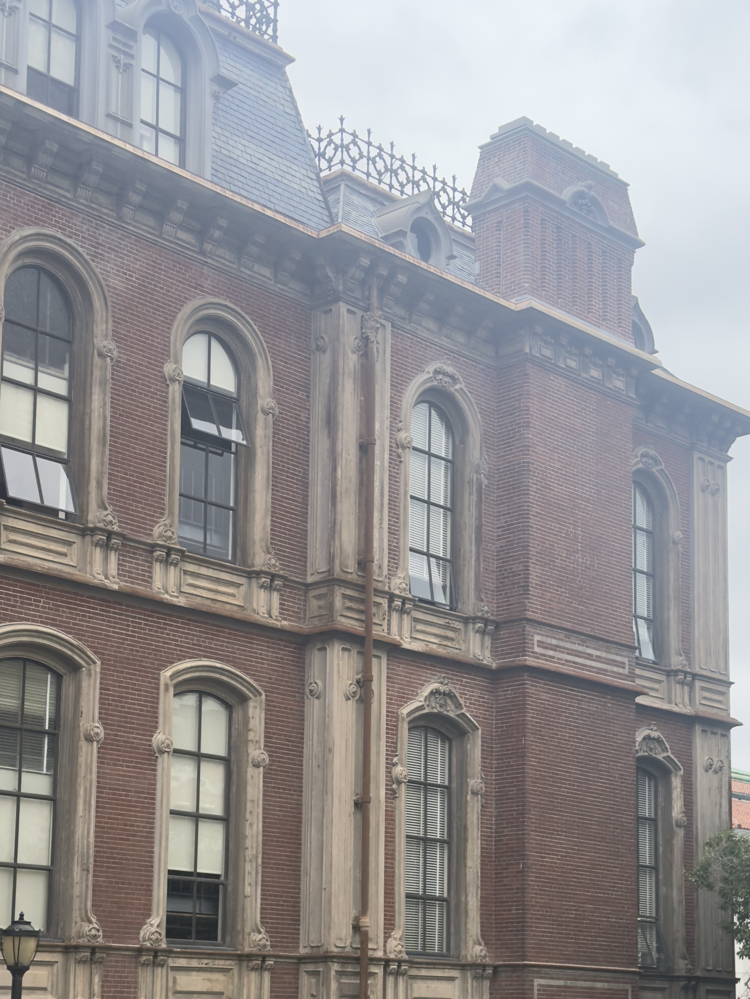
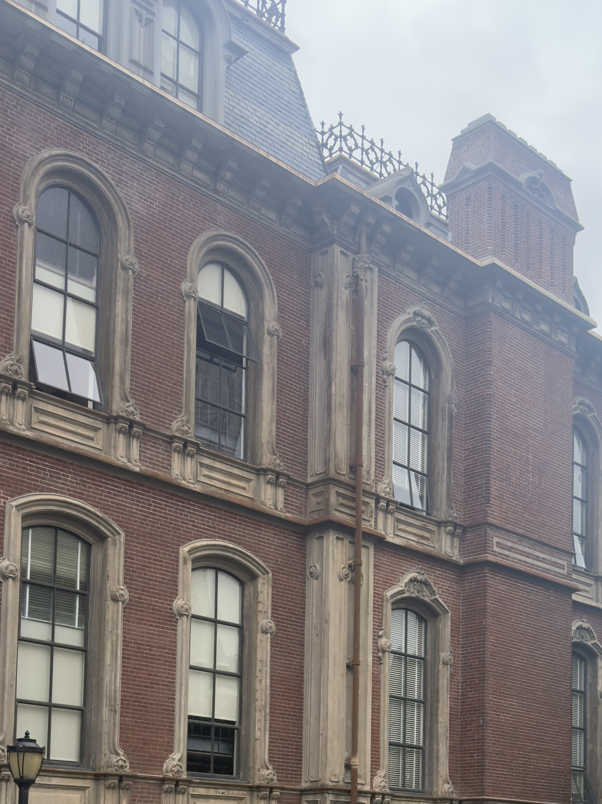
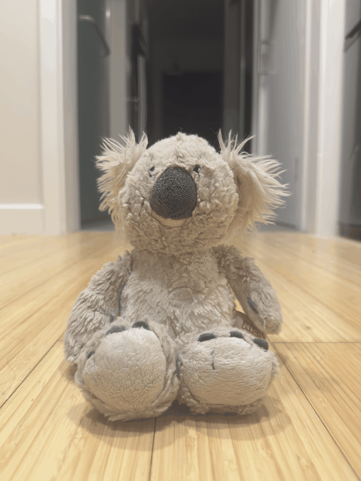

Project 00
I took a series of close-up pictures of myself, changing the distance between the camera and my face and compensating with zoom so that my head filled roughly the same fraction of the frame in every shot. The goal was to isolate the effect of distance alone, then explain why the distant photographs are more flattering.





The effect comes from perspective distortion at short subject distances. Up close, the nose is meaningfully closer to the lens than the ears and the sides of the head, so it projects much larger while the rest of the face falls off toward the back of the frame. Backing away and zooming in shrinks that relative depth difference, the face flattens toward its true proportions, and the portrait reads as more natural.
The task was to do the same thing as in Part 1, but backwards and with a building. I stood far away from a facade, zoomed in and took a photo. Then I walked closer and took a second one without zoom, so the building has about the same size in both pictures. Then I had to figure out why the first one looks flat.


From far away the near and the far corner of the building are almost equally far from the camera, so they end up almost the same size and the wall barely tapers. That makes the facade look flat. Up close the near corner is much closer than the far one, so it gets a lot bigger, the lines converge more, and the building looks like it actually goes back into space.
The task was to recreate the dolly zoom. I picked a subject with a background far behind it and took a few photos while walking backwards and zooming in at the same time, so the subject stays the same size. Then I put the stills together into a GIF.

Zooming makes everything bigger by the same amount, but moving the camera only changes how big things are compared to each other. Since I used the zoom to keep the subject the same size, only the background changes. Walking backwards compresses the scene, so the background grows while the subject stays put. That mismatch is what makes the shot feel weird.
All projects overview